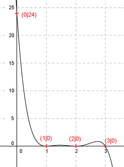

Aufgabe 115 Der Graph einer ganzrationalen Funktion 5. Grades berührt die x-Achse bei 1 und 2, wechselt bei 3 das Vorzeichen und geht durch (0|24). Wie lautet seine Funktionsgleichung?  Allgemeine Form einer ganzrationalen Funktion 5. Grades: f(x) = ax5 + bx4 + cx3 + dx2 + ex + f f’(x) = 5ax4 + 4bx3 + 3cx2 + 2dx + e f’’(x) = 20ax3 + 12bx2 + 6cx + 2d 6 Bedingungen: 1. Berührt die x-Achse bei 1 bedeutet zum einen: f(1) = 0 --> a * 15 + b * 14 + c * 13 + d * 12 + e * 1 + f = 0 --> a + b + c + d + e + f = 0 I 2. Berührt die x-Achse bei 1 bedeutet zum anderen: f’(1) = 0 --> 5a * 14 + 4b * 13 + 3c * 12 + 2d * 1 + e = 0 --> 5a + 4b + 3c + 2d + e = 0 II 3. Berührt die x-Achse bei 2 bedeutet zum einen: f(2) = 0 --> a * 25 + b * 24 + c * 23 + d * 22 + e * 2 + f = 0 --> 32a + 16b + 8c + 4d + 2e + f = 0 III 4. Berührt die x-Achse bei 2 bedeutet zum anderen: f’(2) = 0 --> 5a * 24 + 4b * 23 + 3c * 22 + 2d * 2 + e = 0 --> 80a + 32b + 12c + 4d + e = 0 IV 5. Wechselt bei 3 das Vorzeichen bedeutet: f(3) = 0 --> a * 35 + b * 34 + c * 33 + d * 32 + e * 3 + f = 0 --> 243a + 81b + 27c + 9d + 3e + 24 = 0 V 6. Geht durch (0|24) bedeutet: f(0) = 24 --> a * 05 + b * 04 + c * 03 + d * 02 + e * 0 + f = 24 --> f = 24 I * (-1) (f = 24 eingesetzt) + II -a - b - c - d - e - 24 = 0 5a + 4b + 3c + 2d + e = 0 -------------------------------- 4a + 3b + 2c + d - 24 = 0 |+24 4a + 3b + 2c + d = 24 VI I * (-2) (f = 24 eingesetzt) + III -2a - 2b - 2c - 2d - 2e - 48 = 0 32a + 16b + 8c + 4d + 2e + 24 = 0 ---------------------------------- 30a + 14b + 6c + 2d - 24 = 0|+24 30a + 14b + 6c + 2d = 24 VII I * (-3) + V (f = 24 eingesetzt) -3a - 3b - 3c - 3d - 3e - 72 = 0 243a + 81b + 27c + 9d + 3e + 24 = 0 ------------------------------------ 240a + 78b + 24c + 6d - 48 = 0 |+48 240a + 78b + 24c + 6d = 48 VIII I * (-1) (f = 24 eingesetzt) + IV -a - b - c - d - e - 24 = 0 80a + 32b + 12c + 4d + e = 0 ---------------------------------- 79a + 31b + 11c + 3d - 24 = 0 |+24 79a + 31b + 11c + 3d = 24 IX VI * (-2) + VII -8a - 6b - 4c - 2d = -48 30a + 14b + 6c + 2d = 24 -------------------------- 22a + 8b + 2c = -24 X VI * (-6) + VIII -24a - 18b - 12c - 6d = -144 240a + 78b + 24c + 6d = 48 ----------------------------- 216a + 60b + 12c = -96 XI VI * (-3) * IX -12a - 9b - 6c - 3d = -72 79a + 31b + 11c + 3d = 24 --------------------------- 67a + 22b + 5c = -48 XII X * (-6) + XI -132a - 48b - 12c = 144 216a + 60b + 12c = -96 ------------------------ 84a + 12b = 48 XIII X * (-5) + XII * 2 -110a - 40b - 10c = 120 134a + 44b + 10c = -96 ------------------------ 24a + 4b = 24 XIV XIV * (-3) + XIII -72a- 12b = -72 84a +12b = 48 ---------------- 12a = -24 |:12 a = -2 a = -2 in XIV eingesetzt: 24 * (-2) + 4b = 24 -48 + 4b = 24 |+48 4b = 72 |:4 b = 18 a = -2 und b = 18 in XII eingesetzt. 67 * (-2) + 22 * 18 + 5c = -48 -134 + 396 + 5c = -48 262 + 5c = -48 |-262 5c = -310 |:5 c = -62 a = -2 und b = 18 und c = -62 in VII eingesetzt. 30 * (-2) + 14 * 18 + 6 * (-62) + 2d = 24 -60 + 252 - 372 + 2d = 24 -180 + 2d = 24 |+180 2d = 204 |:2 d = 102 a = - 2 und b = 18 und c = - 62 und d = 102 in I eingesetzt: -2 + 18 - 62 + 102 + e + 24 = 0 80 + e = 0 |-80 e = -80 Gesuchte Funktionsgleichung: f(x) = -2x5 + 18x4 - 62x3 + 102x2 - 80x + 24